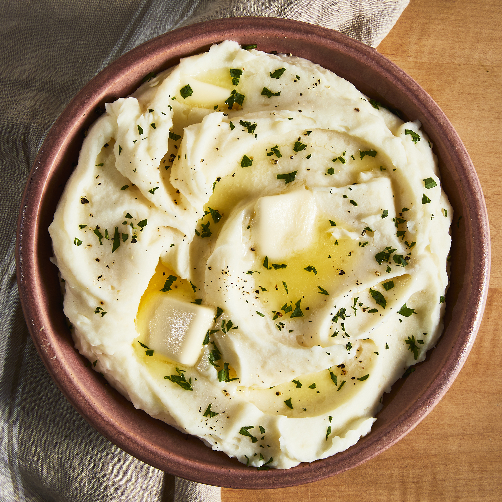

Mashed Potatoes

Shawn's Famous Mashed Potatoes
Shawn likes butter, cream cheese, butter and more butter. Don't forget the
potatoes but also, don't forget the butter. It's kind of cheating to use
so much fat to extenuate the flavor of the potatoes. But its necessary
and its the way its been done for a long time. So no need to change what tastes
amazing!
You will only need a knife,potaote masher(or cup),and boiling pot
Ingredients
- 4 lbs potatoes
- 1 bunch parsley
- 1 bunch green onion
- 1lb of butter
- 1 lb of cream cheese
- salt
- pepper
- 2 1/2 cups milk
Steps
- Place water filled up 1/2 volume of pot and salt generously
- Bring water to a rolling boil
- Wash and place potatoes in boiling water
- Wash and chop parsley and green onions
- Cook for 12-15 minutes, until you can stick a fork easily through potatoes
- Once tender, strain 90% of water
- With a cup or potatoe masher, mash potatoes to desired consistency(potatoes will still be a bit dry)
- Add chopped parsley,green onions,butter cubes,cream cheese, milk and pepper
- Mix with a fork until potatoes look like creamy clouds of goodness
- Serve and enjoy!